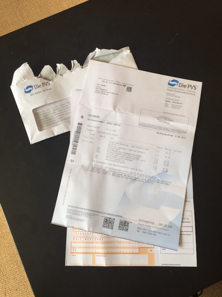
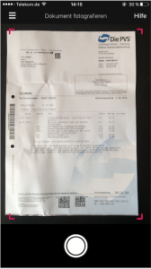
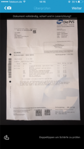
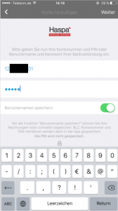
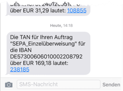
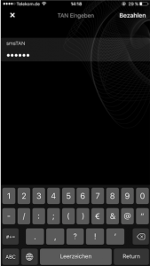
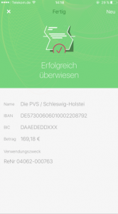

So macht Rechnungen zahlen Freude
Rechnungen bezahlen mit Freude? Sie runzeln jetzt sicher die Stirn angesichts der Überschrift dieses Blogartikels. Aber ich meine es wirklich so: Neuerdings macht mir das Zahlen von Rechnungen Spaß.
Darüber, dass überhaupt etwas zu zahlen ist, müssen wir nicht reden. Wenn Sie sich dafür entschieden haben, ein Produkt zu kaufen oder eine Dienstleistung in Anspruch zu nehmen, dann haben Sie dafür Ihre Gründe. Die damit verbundene Lust – oder auch vielleicht den Frust angesichts einer Ausgabe – meine ich nicht, wenn ich von freudiger Rechnungszahlung spreche.
Mir geht es nur um den Zahlungsvorgang. Die Rechnung kommt per Email als PDF oder landet bei Ihnen im Briefkasten. Jetzt müssen Sie sie begleichen. Dafür gehen Sie hoffentlich schon lange nicht mehr zur Bank, sondern benutzen online Banking. Das ist bequemer als der Gang zur Bank, doch irgendwie immer noch umständlich, oder? Zumindest meine Bequemlichkeitsansprüche steigen ständig. Gestern noch war ich begeistert vom online Banking – heute wünsche ich mir das auch schon wieder benutzerfreundlicher.
Für die online Überweisung müssen Sie auf der Rechnung den Empfänger, die IBAN, womöglich die BIC, den Betrag und auch noch Angaben für den Überweisungstext wie Rechnungsnummer oder Kundennummer finden und ins online Formular tippen. So viele Ziffern… wie leicht vertun Sie sich da? Selbst eine PDF-Rechnung macht das nicht immer einfacher. Manche werden als eingebettetes Bild verschickt, so dass kein Text auswählbar und über die Zwischenablage kopierbar ist. Manche schreiben gerade die IBAN mit Leerzeichen, so dass sie nicht von allen online Banking Formularen akzeptiert wird. Es ist zum Mäusemelken…
Doch all diese Mühe hat nun ein Ende! Aus der Überweisungslast ist für mich nun geradezu eine Überweisungslust geworden 😉 Verantwortlich ist dafür eine App: Gini Pay.
Mit Gini Pay kann ich meine Rechnung einfach fotografieren, die App erkennt alle nötigen Zahlungsdaten, und dann überweise ich aus der App heraus. Fertig. Ich muss nichts mehr abtippen. Das spart Zeit und reduziert Fehlermöglichkeiten.
Gini Pay gibts in den App Stores von iOS und Android.
Rechnung zahlen kinderleicht
Wie Sie mit Gini Pay freudvoll bezahlen können, zeige ich Ihnen am besten anhand eines kleinen Fotoprotokolls.
Heute war z.B. diese Papier-Rechnung in meinem Postkasten:

Man hat schon versucht, es mir einfach zu machen, indem der Rechnung ein ausgefüllter Überweisungsträger beigelegt war. Aber wer will denn noch zur Bank gehen…? 😉
Mit Gini Pay war die Überweisung zum Glück in wenigen Schritten erledigt.
Am Anfang steht der Scan der Rechnung. Mit Gini Pay ist das ganz leicht. Ich fotografiere die Rechnung einfach:

Was Gini Pay aufgenommen hat, wird mir dann nochmal zur Kontrolle angezeigt:

Dann zeigt Gini Pay mir, was es aus dem Dokument herausgelesen hat:
Wenn das passt, dann wähle ich ein Konto, von dem ich überweisen will:

Dann zeigt mir Gini Pay, wie ich die Überweisung autorisieren kann. In meinem Fall per SMS-TAN.
Nun muss ich leider einmal die App wechseln, um die TAN zu lesen:

Die trage ich anschließend in Gini Pay ein:

Fertig!

So dauert eine Überweisung ca. 1 Minute und ich habe nur eine TAN eingeben müssen.
Fazit
Papierpost macht mir grundsätzlich keine Freude. Noch weniger eine Rechnung. Doch mit Gini Pay hat sich meine Haltung verändert. Ich blicke einer Rechnung nun sehr gelassen, geradezu freudvoll entgegen. Sie gibt mir die Gelegenheit, die Segnungen des digitalen Zeitalters einmal mehr zu genießen – um mich schnell wieder dem zu widmen, was eigentlich wichtig ist.
Weitere Artikel

Digitale Tools für Zusammenarbeit im Office
E-Mail, Digitale Ablage und eine Branchensoftware sind schon lange nicht mehr genug für effiziente Zusammenarbeit. Doch bevor Sie sich in einem Dschungel an digitalen Werkzeugen verlieren, sollten Sie sich über die Systematik …

Kollaboration im Office mit Kanbanize
Ein Tool, was mich für die digitale Kollaboration im Office begeistert ist Kanbanize. Dort kann man wirklich sehr fortgeschritten und smart zusammenarbeiten. Mit seinen verschiedenen Perspektiven auf den Flow im Office, der …